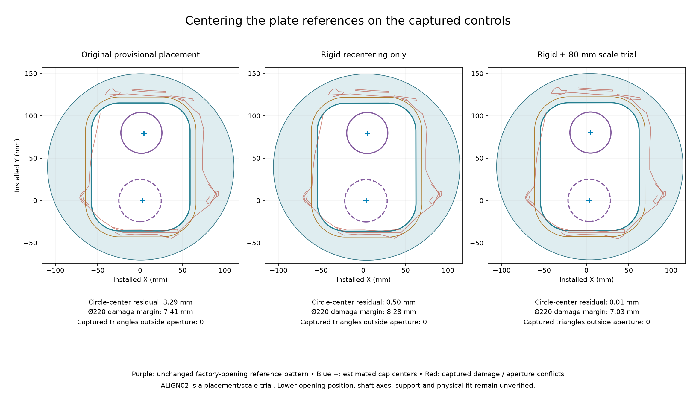
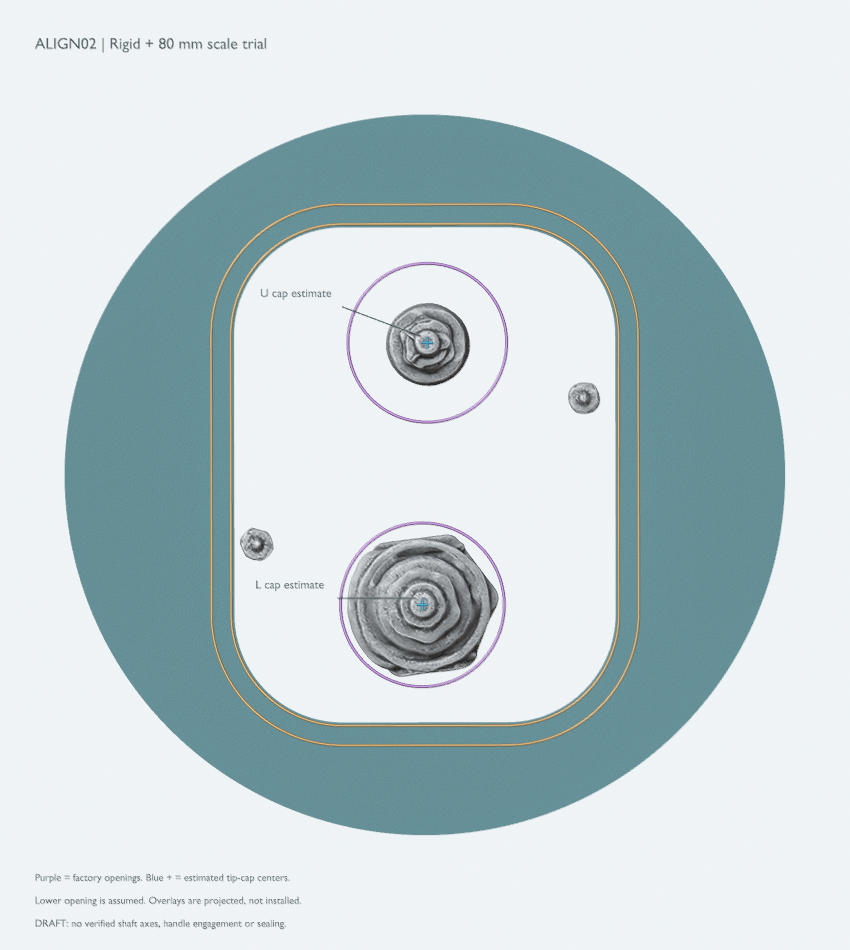

← Why the original centers were wrongReconcile the whole factory assembly
Three explicit model states, no accepted physical correction. The original scan and numeric measurements stay unchanged. These trials show how inferred centering affects coverage and insertion; they do not approve fit or manufacture.
What changes in the trials
The second view applies one rigid transform to the existing factory-opening pattern and the complete main trim/backing arrangement. Neither individual opening is independently moved. The third view first uses your 80 mm 3D control-tip-center reading to calibrate a separate, uniformly scaled scan trial, then rigidly places the same unscaled factory parts. Both use the cap-center estimates from ALIGN01 and retain the old tip Z values as a depth sensitivity assumption.

The lower reference opening's position and diameter are still unmeasured. A small fit residual against that assumed pattern is not an independent proof of factory alignment. The caliper-conditioned state uses the 80 mm reading as an input; matching it is not a validation test.
The hardware check uses the same 51,929 triangle projections as AP01, clipped above the provisional 0.5 mm plane and inside the observed opening eroded by 3 mm. Those boundaries scale with the separate scan trial. It excludes the stone edge and hidden hardware; zero conflicts applies only to that captured subset.
What this means for knob access
The purple circles represent the factory inner-plate openings: the upper diameter is measured at 48.46 mm; the lower 50 mm diameter and its position remain assumptions. The upright custom aperture surrounds these circles with about 11.0 mm of extra space at the upper opening and 10.9 mm at the lower one. Those margins stay the same when the factory pattern and backing move together.
This supports clearance through the custom backing for a coaxial rearward-reaching profile no wider than the corresponding circle, subject to actual shape, tilt and placement. It does not prove clearance through the factory opening itself. If the passing connection is almost the same diameter as that opening, even a small center error can matter. The complete visible knob diameter also does not establish the size or depth of its rear connection. Confirm the actual axes, profiles and axial engagement with the real parts.
The closest captured hardware is tighter than these opening circles: the separate analytic check finds only about 1.68 mm to the aperture in the caliper-conditioned trial. That is a model gap before unknown scan, axis, placement and manufacturing errors. It is not an accepted clearance allowance or machining tolerance.
The other five readings remain checks, with uncertain scan endpoints
All dimensions mm. Only the U/L XY points are replaced with diagnostic cap-center estimates in this comparison; stud endpoints and tip depths remain the original provisional picks. The remaining discrepancies must not become machining tolerances. Corrected stud-axis/end-face identification and actual depth are still needed.
Do not shift only the factory inner plate
In the unscaled rigid trial, leaving the custom backing fixed while moving the inner plate removes support from approximately 310 mm² of the nominal foam band. Its inward overhang reaches about 2.27 mm. Moving the backing aperture with the factory plate preserves their nominal 1 mm additional land under the same assumed foam/corner geometry, but changes insertion clearance and wall coverage.
These are projected model results. They do not establish sound stone, actual foam shape/compression, a continuous surface seal, or concealed waterproofing.
What determines the next physical placement
Use the real rigid inner plate and the actual adapter/handle interfaces to register both controls and mounting studs together. Confirm the lower factory opening diameter and its edge-to-edge spacing from the measured upper opening. Check the rearward-reaching connection profiles and thickness-correct engagement. Once that placement is established, recalculate the custom aperture, foam landing, outer damage margins and diverter gap together.
All transforms, per-feature margins and source hashes. AP01 cutting files are unchanged local shapes, still draft. No fabrication package has been released.
Blender: three separate placement states
Open the saved ALIGN02 Blender comparison. It opens to the 80 mm scale trial; the original and rigid-only states remain separate scenes. The source display crop is unchanged in the original state. Actual CAD parts retain their measured/draft sizes in every state.

Blue crosses identify the estimated tip-cap centers. Purple rings are opening references, not measured knob profiles. Foam outlines are projected from the removed plate; this is not an installed-foam view.